6. Bijlagen
Hier leggen we uit hoe je de tools die in dit document worden gebruikt, kunt installeren op Windows-computers met Windows 7 tot en met 10. De lezer kan dit aanpassen aan zijn eigen omgeving.
6.1. Installatie van de IDE Arduino
De officiële website van Arduino is [http://www.arduino.cc/]. Daar vindt u de ontwikkelingsversie IDE voor de Arduino's [http://arduino.cc/en/Main/Software]:
 | 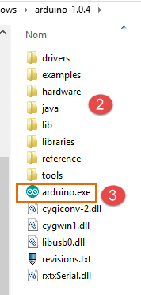 |
Het gedownloade bestand [1] is een zip-bestand dat, eenmaal uitgepakt, de mapstructuur [2] oplevert. U kunt IDE starten door te dubbelklikken op het uitvoerbare bestand [3].
6.2. Installatie van de driver voor de Arduino
Om ervoor te zorgen dat IDE met een Arduino kan communiceren, moet deze door de host PC worden herkend. Hiervoor kunt u als volgt te werk gaan:
- sluit de Arduino aan op een poort van de hostcomputer;
- het systeem zal vervolgens proberen het stuurprogramma voor het nieuwe apparaat USB te vinden. Het zal dit niet vinden. Geef dan aan dat het stuurprogramma zich op de schijf bevindt in de map <arduino>/drivers, waarbij <arduino> de installatiemap van de IDE Arduino is.
6.3. Testen van de IDE
Om de IDE te testen, kun je als volgt te werk gaan:
- start de IDE;
- sluit de Arduino aan op de PC via de bijbehorende kabel USB. Sluit de netwerkkaart voorlopig nog niet aan;
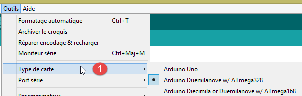 |  |
- in [1], kies het type Arduino-kaart dat is aangesloten op poort USB;
- in [2], geef de poort USB op waarop de Arduino is aangesloten. Om dit te achterhalen, koppelt u de Arduino los en noteert u de poorten. Sluit hem weer aan en controleer de poorten opnieuw: de poort die is toegevoegd, is die van de Arduino;
Voer enkele van de voorbeelden uit die zijn opgenomen in het IDE:
 |
Het voorbeeld wordt geladen en weergegeven:
 |
De voorbeelden bij het bestand IDE zijn zeer leerzaam en goed van commentaar voorzien. Arduino-code wordt geschreven in de programmeertaal C en bestaat uit twee duidelijk gescheiden delen:
- een functie [setup] die één keer wordt uitgevoerd bij het opstarten van de applicatie, dat wil zeggen wanneer deze „wordt geüpload " van de host-PC naar de Arduino, of wanneer de applicatie al op de Arduino aanwezig is en er op de knop [Reset] wordt gedrukt. Hier wordt de initialisatiecode van de applicatie geplaatst;
- een functie die continu wordt uitgevoerd (oneindige lus). Hier wordt de kern van de applicatie geplaatst.
Hier
- configureert de functie [setup] pin nr. 13 als uitgang;
- de functie [loop] schakelt deze herhaaldelijk in en uit: de led gaat elke seconde aan en uit.
1  |
Het weergegeven programma wordt met de knop [1] naar de Arduino overgebracht (geüpload). Zodra het is overgebracht, wordt het uitgevoerd en begint led nr. 13 oneindig te knipperen.
6.4. Netwerkverbinding van de Arduino
De Arduino of Arduino's en de host PC moeten zich in hetzelfde privénetwerk bevinden:
 |
Als er slechts één Arduino is, kan deze via een eenvoudige PC-kabel 45 worden aangesloten op de RJ-host. Als er meer dan één is, worden de PC-host en de Arduino's via een mini-hub op hetzelfde netwerk aangesloten.
De PC-host en de Arduino's worden op het privénetwerk 192.168.2.x geplaatst.
- Het adres IP van de Arduino's wordt vastgelegd door de broncode. We zullen zien hoe;
- het adres IP van de hostcomputer kan als volgt worden ingesteld:
- kies de optie [Panneau de configuration\Réseau et Internet\Centre Réseau et partage]:
 |
- in [1], volg de link [Connexion au réseau local]
 |  |
- naar [2], bekijk de eigenschappen van de verbinding;
- in [4], bekijk de eigenschappen van de verbinding IP v4 [3];
 |
- in [5], het adres IP [192.168.2.1] aan de hostcomputer toewijzen;
- in [6], geef het subnetmasker [255.255.255.0] aan het netwerk;
- bevestig alles in [7].
6.5. Een netwerktoepassing testen
Laad met IDE het voorbeeld [Exemples / Ethernet / WebServer]:
/*
Web Server
A simple web server that shows the value of the analog input pins.
using an Arduino Wiznet Ethernet shield.
Circuit:
* Ethernet shield attached to pins 10, 11, 12, 13
* Analog inputs attached to pins A0 through A5 (optional)
created 18 Dec 2009
by David A. Mellis
modified 9 Apr 2012
by Tom Igoe
*/
#include <SPI.h>
#include <Ethernet.h>
// Voer hieronder een MAC-adres en een IP-adres in voor uw controller.
// Het IP-adres is afhankelijk van uw lokale netwerk:
byte mac[] = {
0xDE, 0xAD, 0xBE, 0xEF, 0xFE, 0xED };
IPAddress ip(192,168,1, 177);
// Initialiseer de Ethernet-serverbibliotheek
// met het IP-adres en de poort die u wilt gebruiken
// (poort 80 is de standaardpoort voor HTTP):
EthernetServer server(80);
void setup() {
// Open de seriële communicatie en wacht tot de poort wordt geopend:
Serial.begin(9600);
while (!Serial) {
; // wacht tot de seriële poort verbinding maakt. Alleen nodig voor Leonardo
}
// start de Ethernet-verbinding en de server:
Ethernet.begin(mac, ip);
server.begin();
Serial.print("server is at ");
Serial.println(Ethernet.localIP());
}
void loop() {
// luister naar binnenkomende clients
EthernetClient client = server.available();
if (client) {
Serial.println("new client");
// een HTTP-verzoek eindigt met een lege regel
boolean currentLineIsBlank = true;
while (client.connected()) {
if (client.available()) {
char c = client.read();
Serial.write(c);
// als je aan het einde van de regel bent gekomen (een nieuwe regel
// teken) en de regel leeg is, is het HTTP-verzoek beëindigd,
// dus kun je een antwoord verzenden
if (c == '\n' && currentLineIsBlank) {
// stuur een standaard HTTP-responsheader
client.println("HTTP/1.1 200 OK");
client.println("Content-Type: text/html");
client.println("Connection: close");
client.println();
client.println("<!DOCTYPE HTML>");
client.println("<html>");
// voeg een meta-refresh-tag toe, zodat de browser elke 5 seconden opnieuw gegevens ophaalt:
client.println("<meta http-equiv=\"refresh\" content=\"5\">");
// de waarde van elke analoge ingangspin weergeven
for (int analogChannel = 0; analogChannel < 6; analogChannel++) {
int sensorReading = analogRead(analogChannel);
client.print("analog input ");
client.print(analogChannel);
client.print(" is ");
client.print(sensorReading);
client.println("<br />");
}
client.println("</html>");
break;
}
if (c == '\n') {
// je begint aan een nieuwe regel
currentLineIsBlank = true;
}
else if (c != '\r') {
// je hebt een teken ontvangen op de huidige regel
currentLineIsBlank = false;
}
}
}
// geef de webbrowser de tijd om de gegevens te ontvangen
delay(1);
// sluit de verbinding:
client.stop();
Serial.println("client disconnected");
}
}
Deze applicatie maakt een webserver aan op poort 80 (regel 30) op het adres IP van regel 25. Het adres MAC op regel 23 is het adres MAC dat is opgegeven op de netwerkkaart van de Arduino.
De functie [setup] initialiseert de webserver:
- regel 34: initialiseert de seriële poort waarop de applicatie logbestanden zal aanmaken. We zullen deze volgen;
- regel 41: het knooppunt TCP-IP (IP, poort) wordt geïnitialiseerd;
- regel 42: de server uit regel 30 wordt op dit netwerkknooppunt gestart;
- regels 43-44: het adres IP van de webserver wordt gelogd;
De functie [loop] implementeert de webserver:
- regel 50: als een client verbinding maakt met de webserver, retourneert [server].available deze client; anders wordt null geretourneerd;
- regel 51: als de klant niet null is;
- regel 55: zolang de client verbonden is;
- regel 56: [client].available is waar als de client tekens heeft verzonden. Deze worden opgeslagen in een buffer. [client].available is waar zolang deze buffer niet leeg is;
- regel 57: er wordt een door de client verzonden teken gelezen;
- regel 58: dit teken wordt weergegeven op de logconsole;
- regel 62: in het protocol HTTP wisselen de client en de server tekstregels uit.
- de client stuurt een HTTP-verzoek naar de webserver door een reeks tekstregels te verzenden die eindigt met een lege regel,
- de server antwoordt vervolgens de client door een antwoord te sturen en de verbinding te verbreken;
Regel 62: de server doet niets met de HTTP-headers die hij van de client ontvangt. Hij wacht gewoon op de lege regel: een regel die uitsluitend het teken \n bevat;
- regels 64-67: de server stuurt de standaardtekstregels van het protocol HTTP naar de client. Deze eindigen met een lege regel (regel 67);
- vanaf regel 68 verstuurt de server een document naar zijn client. Dit document wordt dynamisch door de server gegenereerd en heeft het formaat HTML (regels 68-69);
- regel 71: een speciale HTML-regel die de browser van de client vraagt om de pagina elke 5 seconden te verversen. Zo zal de browser elke 5 seconden dezelfde pagina opvragen;
- regels 73-80: de server stuurt de waarden van de 6 analoge ingangen van de Arduino naar de browser van de klant;
- regel 81: het document HTML wordt gesloten;
- regel 82: we verlaten de while-lus van regel 55;
- regel 97: de verbinding met de client wordt verbroken;
- regel 98: de gebeurtenis wordt geregistreerd in de logconsole;
- regel 100: we keren terug naar het begin van de functie loop: de server gaat weer luisteren naar de clients. We hebben gezegd dat de browser van de client elke 5 seconden opnieuw dezelfde pagina zou opvragen. De server zal er zijn om opnieuw te antwoorden.
Pas de code op regel 25 aan en voer het adres IP van je Arduino in, bijvoorbeeld:
Upload het programma naar de Arduino. Start de logconsole (Ctrl-M) (M hoofdletter):
 |  |
- in [1], de logconsole. De server is gestart;
- in [2] roepen we met een browser het adres IP van de Arduino op. Hier wordt [192.168.2.2] standaard vertaald als [http://198.162.2.2:80];
- in [3], de informatie die door de webserver wordt verzonden. Als we de broncode van de browserpagina bekijken, krijgen we:
Hier herkennen we de tekstregels die door de server zijn verzonden. Aan de Arduino-kant geeft de logconsole weer wat de client naar de Arduino stuurt:
- regels 2-9: standaard HTTP-headers;
- regel 10: de lege regel waarmee ze worden afgesloten.
Bestudeer dit voorbeeld goed. Het zal je helpen de programmering van de Arduino te begrijpen die in de TP wordt gebruikt.
6.6. De bibliotheek aJson
In de te schrijven TP wisselen de Arduino's tekstregels in het jSON-formaat uit met hun clients. Standaard bevat de IDE Arduino geen bibliotheek om het jSON te beheren. We gaan de bibliotheek aJson installeren die beschikbaar is op de URL [https://github.com/interactive-matter/aJson].
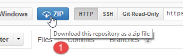 |  |
- in [1]: download de gezipte versie van de GitHub-repository;
- pak de map uit en kopieer de map [aJson-master] [2] naar de map [<arduino>/libraries] [3], waarbij <arduino> de installatiemap is van deIDE Arduino;
 | 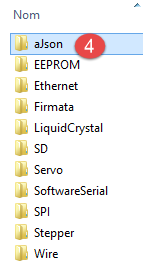 |  |
- in [4], hernoem deze map naar [aJson];
- de inhoud in [5].
Start nu de Arduino IDE:
 |
Controleer of er in de voorbeelden nu voorbeelden staan voor de bibliotheek aJson. Voer deze voorbeelden uit en bestudeer ze.
6.7. De Android-tablet
De voorbeelden zijn getest met de Samsung Galaxy Tab 2.
Om de voorbeelden op een tablet te testen, moet u eerst de driver van de tablet op uw ontwikkelcomputer installeren. Die van de Samsung Galaxy Tab 2 is te vinden op de URL [http://www.samsung.com/fr/support/usefulsoftware/KIES/]:
 |
Om de voorbeelden te testen, moet je de tablet verbinden met een netwerk (waarschijnlijk wifi) en het adres IP van de tablet op dat netwerk kennen. Dit is hoe je te werk gaat (Samsung Galaxy Tab 2):
- zet je tablet aan;
- zoek in de beschikbare apps op de tablet (rechtsboven) naar de app met de naam [paramètres] en een tandwielpictogram;
- schakel in het gedeelte aan de linkerkant wifi in;
- selecteer in het gedeelte aan de rechterkant een wifi-netwerk;
- zodra je verbinding hebt met het netwerk, tik je kort op het geselecteerde netwerk. Het adres IP van de tablet wordt weergegeven. Noteer dit. Je hebt het nodig;
Nog steeds in de app [Paramètres],
- selecteer links de optie [Options de développement] (helemaal onderaan de opties);
- Controleer of rechts de optie [Débogage USB] is aangevinkt.
Om terug te keren naar het menu, tikt u in de statusbalk onderaan op het middelste pictogram, dat van een huisje. Nog steeds in de statusbalk onderaan,
- is het pictogram helemaal links dat voor 'terug': hiermee keert u terug naar het vorige scherm;
- het pictogram uiterst rechts is dat voor taakbeheer. U kunt alle taken bekijken en beheren die op een bepaald moment door uw tablet worden uitgevoerd;
Sluit je tablet aan op je PC met de meegeleverde kabel USB.
Steek de wifi-stick in een van de USB-poorten van de PC en maak vervolgens verbinding met hetzelfde wifi-netwerk als de tablet. Typ vervolgens in een DOS-venster de opdracht [ipconfig]:
Uw PC heeft twee netwerkkaarten en dus twee IP-adressen:
- die op regel 9, die van de PC op het bekabelde netwerk;
- die op regel 17, die van de PC op het wifi-netwerk;
Noteer deze twee gegevens. U zult ze nodig hebben. U bevindt zich nu in de volgende configuratie:
 |
De tablet moet verbinding maken met uw PC. Deze wordt normaal gesproken beschermd door een firewall die voorkomt dat externe bronnen een verbinding met de PC tot stand brengen. U moet de firewall dus uitschakelen. Doe dit met de optie [Panneau de configuration\Système et sécurité\Pare-feu Windows]. Soms moet u ook de firewall uitschakelen die door het antivirusprogramma is ingesteld. Dit hangt af van uw antivirusprogramma.
Controleer nu op uw PC de netwerkverbinding met de tablet met de opdracht [ping 192.168.1.y], waarbij [192.168.1.y] het adres IP van de tablet is. U zou iets moeten zien dat er ongeveer zo uitziet:
De regels 4-7 geven aan dat de tablet met adres IP [192.168.1.y] heeft gereageerd op het commando [ping].
6.8. Installatie van een JDK
In de URL [http://www.oracle.com/technetwork/java/javase/downloads/index.html] (juni 2016) is de meest recente versie, JDK, te vinden. Vanaf nu noemen we de installatiemap van de JDK <jdk-install>.
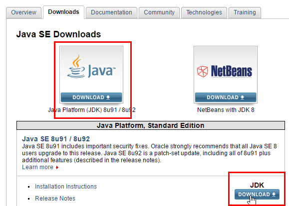 |
6.9. Installatie van de Genymotion-emulatormanager
Het bedrijf [Genymotion] biedt een krachtige Android-emulator aan. Deze is beschikbaar in de URL en [https://cloud.genymotion.com/page/launchpad/download/] (juni 2016).
U moet zich registreren om een versie voor persoonlijk gebruik te verkrijgen. Download het product [Genymotion] samen met de virtuele machine VirtualBox:

We zullen de installatiemap van [Genymotion] hierna <genymotion-install> noemen. Start [Genymotion]. Download vervolgens een image voor een tablet:
 |
- in [1], voeg de virtuele terminal toe die wordt beschreven in [2];
 |
- in [3], configureer de terminal;
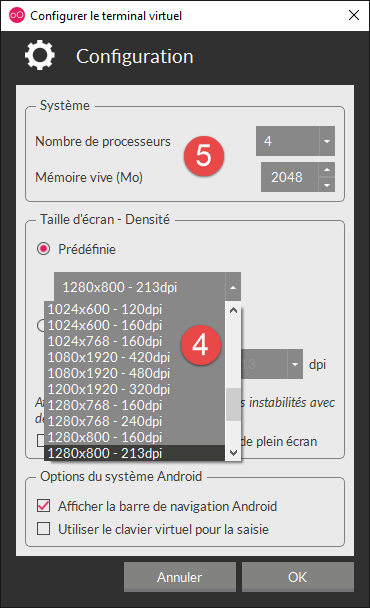 |  |
- in [4-5], pas de terminal aan uw omgeving aan;
- in [6], start de virtuele terminal;
Als alles goed gaat, verschijnt het venster van de Android-emulator:

Soms wordt de Android-emulator niet gestart. Op een Windows-computer kunt u de volgende twee punten controleren:
- controleer of de virtuele machine [Hyper-V] niet is geïnstalleerd. Verwijder deze indien nodig [1-2];
 |  |
- en vervolgens in de configuratiewizard [Centre Réseau et partage] [1]:
 |
 |  |
- in [3] selecteert u de kaart(en) die aan de VirtualBox-virtuele machine zijn gekoppeld;
 |
- controleer of in [6] het vinkje bij het stuurprogramma voor VirtualBox is aangevinkt. Herhaal deze handeling voor alle kaarten die aan de VirtualBox-virtuele machine zijn gekoppeld;
6.10. Maven installeren
Maven is een tool voor het beheer van afhankelijkheden van een Java-project en nog veel meer. Het is beschikbaar via de URL [http://maven.apache.org/download.cgi].
 |
Download en pak het archief uit. We noemen de installatiemap van Maven <maven-install>.
 |
- In [1] configureert het bestand [conf / settings.xml] Maven;
Daarin staan de volgende regels:
<!-- localRepository
| The path to the local repository maven will use to store artifacts.
|
| Default: ${user.home}/.m2/repository
<localRepository>/path/to/local/repo</localRepository>
-->
De standaardwaarde van regel 4 kan, als uw {user.home} net als bij mij een spatie in het pad bevat (bijvoorbeeld [C:\Users\Serge Tahé]), bij bepaalde software problemen opleveren. We schrijven dan iets als:
<!-- localRepository
| The path to the local repository maven will use to store artifacts.
|
| Default: ${user.home}/.m2/repository
<localRepository>/path/to/local/repo</localRepository>
-->
<localRepository>D:\Programs\devjava\maven\.m2\repository</localRepository>
en vermijdt men, op regel 7, een pad dat spaties bevat.
6.11. Installatie van de IDE Android Studio
De IDE Android Studio Community Edition is beschikbaar via de URL [https://developer.android.com/studio/index.html] (juni 2016):
 |
Installeer de IDE en start het programma op. Volg de procedure [1-8] om de onderdelen van de SDK Manager te installeren die worden gebruikt in de volgende voorbeelden. Als u besluit om nieuwere onderdelen te installeren, krijgt u waarschijnlijk waarschuwingen van Android Studio dat de configuratie van de voorbeelden verwijst naar onderdelen van SDK die niet in uw omgeving aanwezig zijn. U kunt dan de suggesties van IDE volgen.
 |
 |
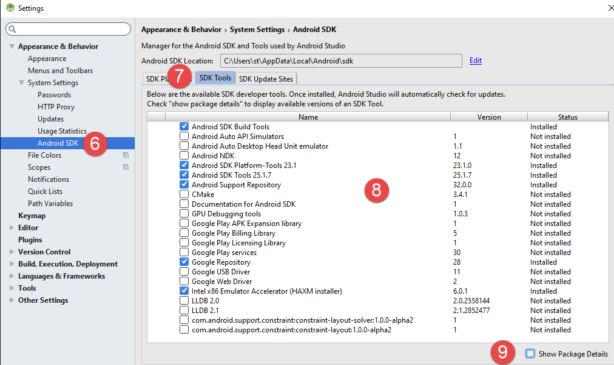 |
- in [9], vraag dan om de details van de pakketten te bekijken:
 |
- In [11] hierboven zijn in de voorbeelden de SDK Build-Tools 23.0.3 gebruikt;
- in [9-12] hieronder, geef de map aan waarin u de emulatorbeheerder [Genymotion] hebt geïnstalleerd;
 |  |
- in [13-18] stelt u de standaardtype van de projecten in;
 |  |
- in [17] is de voorgestelde standaardwaarde normaal gesproken de juiste;
- in [18], zorg ervoor dat u JDK 1.8 hebt;
Hieronder, in [19-26], schakelt u de spellingcontrole uit, die standaard is ingesteld op de Engelse taal;
 |  |
 |
- Hieronder, in [27-28], kiest u het type sneltoetsen dat u wilt gebruiken. U kunt de standaardinstelling van IntelliJ behouden of die van een andere IDE kiezen waaraan u meer gewend bent;
 |
- Hieronder, bij [29-30], laat je de regelnummers van de code weergeven;
 |
- hieronder, in [31-34], geef aan hoe u het eerste project wilt afhandelen bij het opstarten van IDE en vervolgens de volgende projecten;
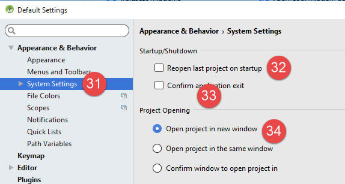 |
Met Android 2.1 (mei 2016) levert de technologie [Instant Run] soms problemen op. In dit document hebben we deze uitgeschakeld:
 |  |
- in [3-4] is alles uitgeschakeld;
6.12. Gebruik van de voorbeelden
De Android Studio-projecten van de voorbeelden zijn beschikbaar onder ICI|. Download ze.
 |
De voorbeelden zijn gebouwd met de eerder gedefinieerde elementen:
- JDK 1.8;
- Android SDK Platform 23 voor uitvoering;
De volgende SDK-tools:
 |
Als uw omgeving niet overeenkomt met de hierboven beschreven, zult u de configuratie van de projecten moeten aanpassen. Dit kan nogal lastig zijn. In eerste instantie is het waarschijnlijk eenvoudiger om een werkomgeving te creëren die vergelijkbaar is met de hierboven beschreven.
Start Android Studio en open vervolgens bijvoorbeeld het project [exemple-07]:
 | 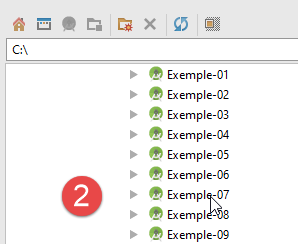 |
 |
- in [1-3] open je het project [Exemple-07];
- bij [4] wordt het bestand [local.properties] gecontroleerd;
 |  |
- op regel 11 hierboven voer je de locatie in van de Android SDK Manager <sdk-manager-install>. Je kunt deze vinden door de procedure [1-4] te volgen:
 |
Alle voorbeelden in dit document zijn Gradle-projecten die zijn geconfigureerd via een [build.gradle] [1-2]-bestand:
 |
Het bestand [build.gradle] uit voorbeeld 07 ziet er als volgt uit:
buildscript {
repositories {
mavenCentral()
mavenLocal()
}
dependencies {
// vervang door de huidige versie van de Android-plugin
classpath 'com.android.tools.build:gradle:2.1.0'
// Vanaf Android Gradle-plugin 0.11 moet je android-apt >= 1.3 gebruiken
classpath 'com.neenbedankt.gradle.plugins:android-apt:1.8'
}
}
apply plugin: 'com.android.application'
apply plugin: 'android-apt'
def AAVersion = '4.0.0'
dependencies {
apt "org.androidannotations:androidannotations:$AAVersion"
compile "org.androidannotations:androidannotations-api:$AAVersion"
compile 'com.android.support:appcompat-v7:23.4.0'
compile 'com.android.support:design:23.4.0'
compile fileTree(dir: 'libs', include: ['*.jar'])
}
repositories {
jcenter()
}
apt {
arguments {
androidManifestFile variant.outputs[0].processResources.manifestFile
resourcePackageName android.defaultConfig.applicationId
}
}
android {
compileSdkVersion 23
buildToolsVersion "23.0.3"
defaultConfig {
applicationId "android.exemples"
minSdkVersion 15
targetSdkVersion 23
versionCode 1
versionName "1.0"
}
buildTypes {
release {
minifyEnabled false
proguardFiles getDefaultProguardFile('proguard-android.txt'), 'proguard-rules.pro'
}
}
compileOptions {
sourceCompatibility JavaVersion.VERSION_1_7
targetCompatibility JavaVersion.VERSION_1_7
}
}
Afhankelijk van de Android-omgeving (SDK en tools) die u hebt samengesteld, kan het nodig zijn om de versies op de regels 8, 21, 22, 38 en 39 aan te passen. Android Studio helpt u hierbij door suggesties te doen. Het is het eenvoudigst om deze suggesties te volgen.
De elementen in het bestand [build.gradle] zijn ook op een andere manier toegankelijk:
 |  |
- de verschillende tabbladen van [3] bevatten de verschillende waarden uit het bestand [build.gradle]. Je kunt dit bestand dus op deze manier opbouwen, waardoor je de syntaxisproblemen van het bestand [build.gradle] kunt omzeilen;
Een ander punt dat moet worden gecontroleerd, is het bestand JDK dat wordt gebruikt door IDE en [5]:
 |
Controleer in [6] het bestand JDK.
Alle voorbeelden zijn Gradle-projecten met afhankelijkheden die moeten worden gedownload. Dit kunt u als volgt doen:
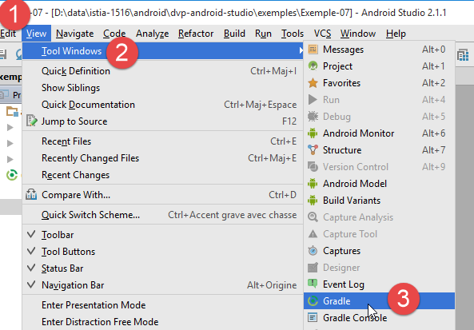 |   |
- in [5] compileert u het project;
Zodra het project foutloos is, moet je een uitvoerconfiguratie [1-8] aanmaken:
 |  |
- in [8] kun je aangeven dat je altijd dezelfde terminal wilt gebruiken voor de uitvoering. Meestal is deze optie aangevinkt om te voorkomen dat je bij elke nieuwe uitvoering opnieuw moet aangeven welke terminal je wilt gebruiken. Hier laten we het vinkje weg, omdat we juist verschillende Android-apparaten gaan testen;
- zodra de uitvoerconfiguratie is aangemaakt, starten we de Android-emulatorbeheerder [1-3];
 |  |
- als de Android-emulator niet start, controleer dan de punten die in paragraaf 6.11 worden genoemd;
Om de applicatie op de emulator te starten, gaat u als volgt te werk [1-4]:
 | 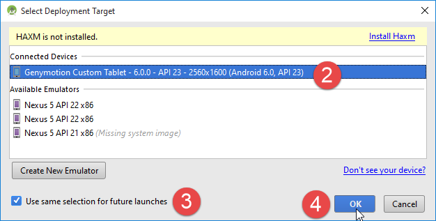 |
- in [2] zou de emulator die u eerder hebt gestart, moeten verschijnen;
 |
- in [5], het scherm dat door de emulator wordt weergegeven;
Sluit nu een Android-tablet aan op een poort USB van de PC en start de app daarop:
 |
- Selecteer in [6] de Android-tablet en test de app.
In [7] hebben we vooraf gedefinieerde virtuele terminals. We gaan leren hoe we deze kunnen toevoegen en verwijderen.
 |
 |
Op de bovenstaande schermafbeelding werken de aangeboden terminals allemaal met API 22. We verwijderen ze allemaal, omdat we met API 23 willen werken. We volgen de procedure [2-3] voor de terminals die moeten worden verwijderd.
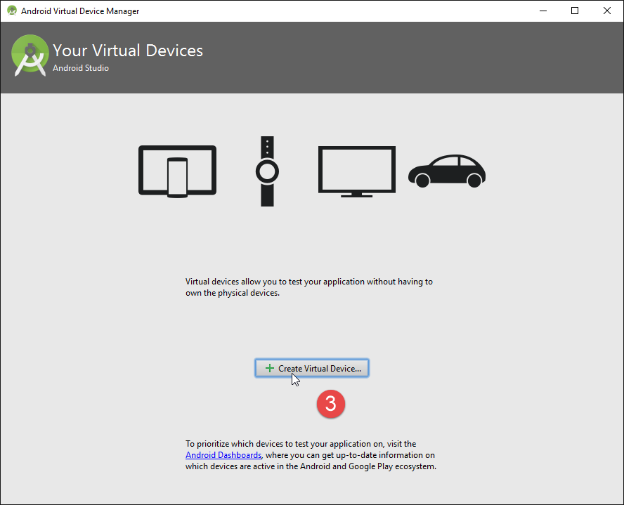
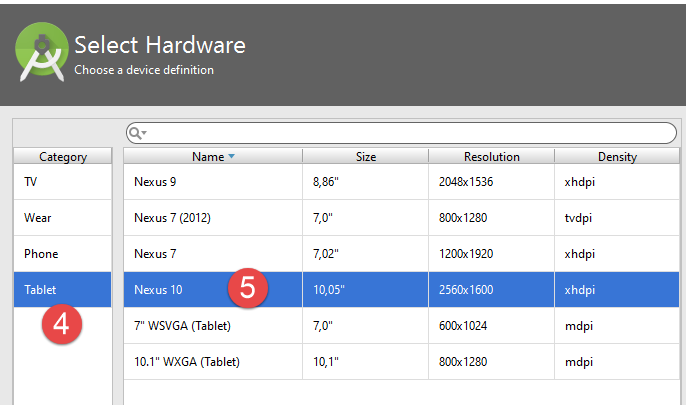 |
- in [4-5] voegen we een tablet toe;
 |
- in [6] kiest men een API. Hierboven kiezen we de API 23 voor een 64-bits Windows;
 |
- in [7], het overzicht van de uitgevoerde configuratie;
- in [8] kan een meer geavanceerde configuratie van de virtuele terminal worden uitgevoerd;
 |
Zodra de wizard is voltooid, verschijnt de aangemaakte terminal in [9].
Als u vervolgens [Exemple-07] opnieuw uitvoert, krijgt u nu het volgende venster te zien:
 |
- in [1] verschijnt de nieuwe virtuele terminal;
- in [2] kunt u nieuwe terminals aanmaken;
Probeer verschillende opties uit om te bepalen welke virtuele terminal het meest geschikt is voor uw computer. In dit document zijn de voorbeelden voornamelijk getest met de Genymotion-emulator.
Ongeacht de gekozen virtuele terminal worden er logbestanden weergegeven in het venster met de naam [Logcat] [1-2]:

Bekijk deze logbestanden regelmatig. Hierin worden de uitzonderingen gemeld die ervoor hebben gezorgd dat uw programma is vastgelopen.
U kunt uw programma ook debuggen met de gebruikelijke debugging-tools:
 |  |
- in [2] plaatst u een breekpunt door één keer op de kolom links van de doelregel te klikken. Met een nieuwe klik wordt het breekpunt opgeheven;
 |
- in [3], voer bij het breekpunt het volgende uit:
- [F6], om de regel uit te voeren zonder de methoden te betreden als de regel methodeaanroepen bevat,
- [F5], om de regel uit te voeren en de methoden te betreden als de regel methodeaanroepen bevat,
- [F8], om door te gaan naar het volgende stoppunt;
- [Ctrl-F2] om het debuggen te stoppen;
6.13. Installatie van de Chrome-plug-in [Advanced Rest Client]
In dit document wordt de Chrome-browser van Google (http://www.google.fr/intl/fr/chrome/browser/) gebruikt. Hieraan voegen we de extensie [Advanced Rest Client] toe. Dit kunt u als volgt doen:
- ga met de Chrome-browser naar de website van [Google Web store] (https://chrome.google.com/webstore);
- zoek de applicatie [Advanced Rest Client]:
 |
- de applicatie is dan beschikbaar om te downloaden:
 |
- om deze te downloaden, moet u een Google-account aanmaken. [Google Web Store] vraagt vervolgens om bevestiging [1]:
 |  |
- In [2] is de toegevoegde extensie beschikbaar via de optie [Applications] [3]. Deze optie wordt weergegeven op elk nieuw tabblad dat u aanmaakt (CTRL-T) in de browser.
6.14. Beheer van het jSON in Java
Op een voor de ontwikkelaar transparante manier maakt het [Spring MVC]-framework gebruik van de bibliotheek jSON [Jackson]. Om te illustreren wat jSON (JavaScript Object Notation) is, presenteren we hier een programma dat objecten serialiseert naar jSON en het omgekeerde doet door de gegenereerde jSON-strings te deserialiseren om de oorspronkelijke objecten te reconstrueren.
Met de bibliotheek 'Jackson' kun je:
- de jSON-string van een object: new ObjectMapper().writeValueAsString(object);
- een object op basis van een tekenreeks jSON: new ObjectMapper().readValue(jsonString, Object.class).
Beide methoden kunnen een IOException starten. Hier volgt een voorbeeld.
 |
Het bovenstaande project is een Maven-project met het volgende bestand [pom.xml];
<?xml version="1.0" encoding="UTF-8"?>
<project xmlns="http://maven.apache.org/POM/4.0.0"
xmlns:xsi="http://www.w3.org/2001/XMLSchema-instance"
xsi:schemaLocation="http://maven.apache.org/POM/4.0.0 http://maven.apache.org/xsd/maven-4.0.0.xsd">
<modelVersion>4.0.0</modelVersion>
<groupId>istia.st.pam</groupId>
<artifactId>json</artifactId>
<version>1.0-SNAPSHOT</version>
<dependencies>
<dependency>
<groupId>com.fasterxml.jackson.core</groupId>
<artifactId>jackson-databind</artifactId>
<version>2.3.3</version>
</dependency>
</dependencies>
</project>
- regels 12-16: de afhankelijkheid die de bibliotheek 'Jackson' binnenhaalt;
De klasse [Personne] ziet er als volgt uit:
package istia.st.json;
public class Personne {
// gegevens
private String nom;
private String prenom;
private int age;
// constructors
public Personne() {
}
public Personne(String nom, String prénom, int âge) {
this.nom = nom;
this.prenom = prénom;
this.age = âge;
}
// handtekening
public String toString() {
return String.format("Personne[%s, %s, %d]", nom, prenom, age);
}
// getters en setters
...
}
De klasse [Main] is als volgt:
package istia.st.json;
import com.fasterxml.jackson.databind.ObjectMapper;
import java.io.IOException;
import java.util.HashMap;
import java.util.Map;
public class Main {
// de tool voor serialisatie/deserialisatie
static ObjectMapper mapper = new ObjectMapper();
public static void main(String[] args) throws IOException {
// een persoon aanmaken
Personne paul = new Personne("Denis", "Paul", 40);
// JSON weergeven
String json = mapper.writeValueAsString(paul);
System.out.println("Json=" + json);
// Person instantiëren op basis van JSON
Personne p = mapper.readValue(json, Personne.class);
// weergave van een persoon
System.out.println("Personne=" + p);
// een array
Personne virginie = new Personne("Radot", "Virginie", 20);
Personne[] personnes = new Personne[]{paul, virginie};
// JSON weergeven
json = mapper.writeValueAsString(personnes);
System.out.println("Json personnes=" + json);
// woordenboek
Map<String, Personne> hpersonnes = new HashMap<String, Personne>();
hpersonnes.put("1", paul);
hpersonnes.put("2", virginie);
// JSON weergeven
json = mapper.writeValueAsString(hpersonnes);
System.out.println("Json hpersonnes=" + json);
}
}
Het uitvoeren van deze klasse leidt tot de volgende schermweergave:
Uit het voorbeeld kunnen we het volgende onthouden:
- het object [ObjectMapper] dat nodig is voor de transformaties jSON / Object: regel 11;
- de transformatie [Personne] --> jSON: regel 17;
- de transformatie jSON --> [Personne]: regel 20;
- de uitzondering [IOException] die door beide methoden wordt gegenereerd: regel 13.
6.15. Installatie van [WampServer]
[WampServer] is een softwarepakket om in PHP / MySQL / Apache te ontwikkelen op een Windows-computer. We zullen het uitsluitend gebruiken voor SGBD en MySQL.
 |  |
- op de website van [WampServer] [1], kies de juiste versie [2],
- het gedownloade uitvoerbare bestand is een installatieprogramma. Tijdens de installatie wordt om diverse gegevens gevraagd. Deze hebben geen betrekking op MySQL. U kunt deze dus negeren. Aan het einde van de installatie verschijnt het venster [3]. Start [WampServer],
 | 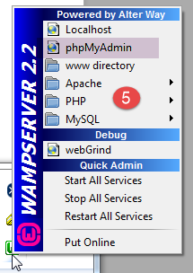 |
- en [4]. Het pictogram van [WampServer] wordt onderaan rechts op het scherm in de taakbalk geïnstalleerd. [4],
- wanneer u erop klikt, verschijnt het menu [5]. Hiermee kunt u de Apache-server en de SGBD MySQL beheren. Om deze te beheren, gebruik je de optie [PhpPmyAdmin];
- waarna het onderstaande venster verschijnt,

We zullen weinig details geven over het gebruik van [PhpMyAdmin]. In het document laten we zien hoe je het moet gebruiken.